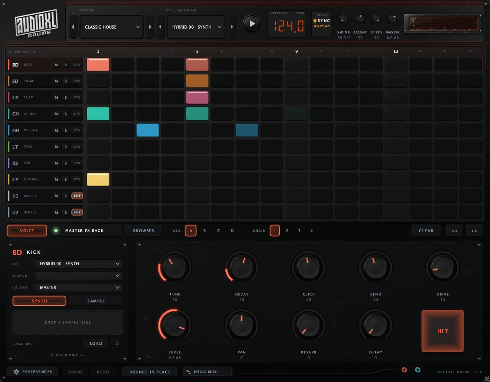
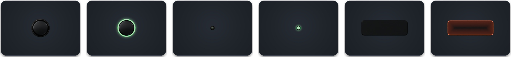
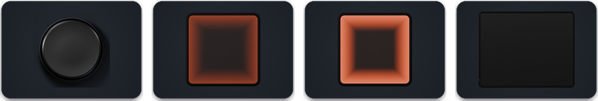
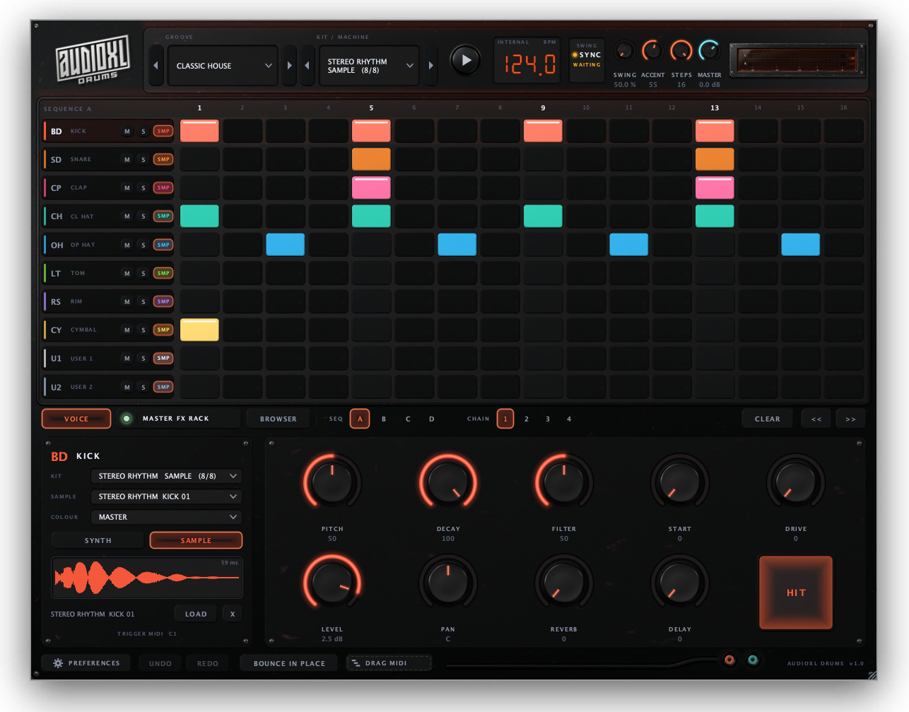
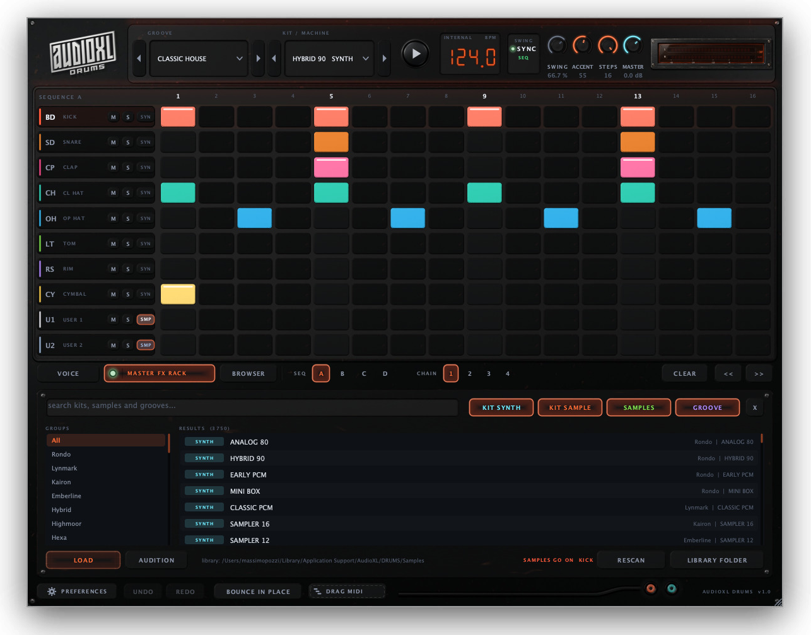
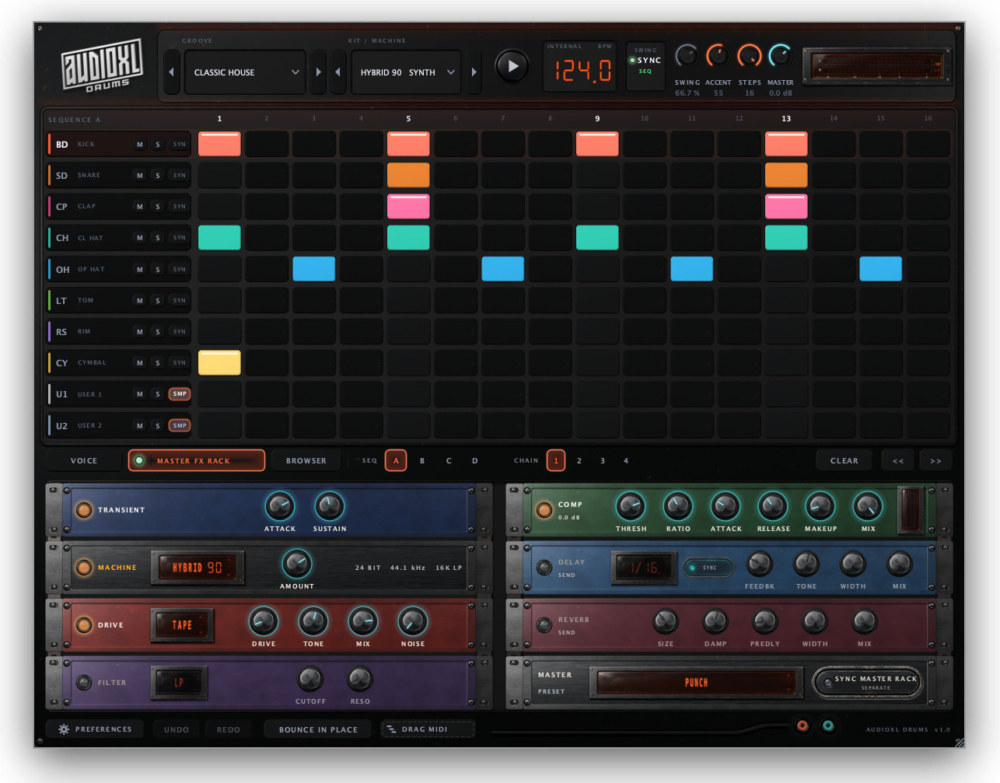
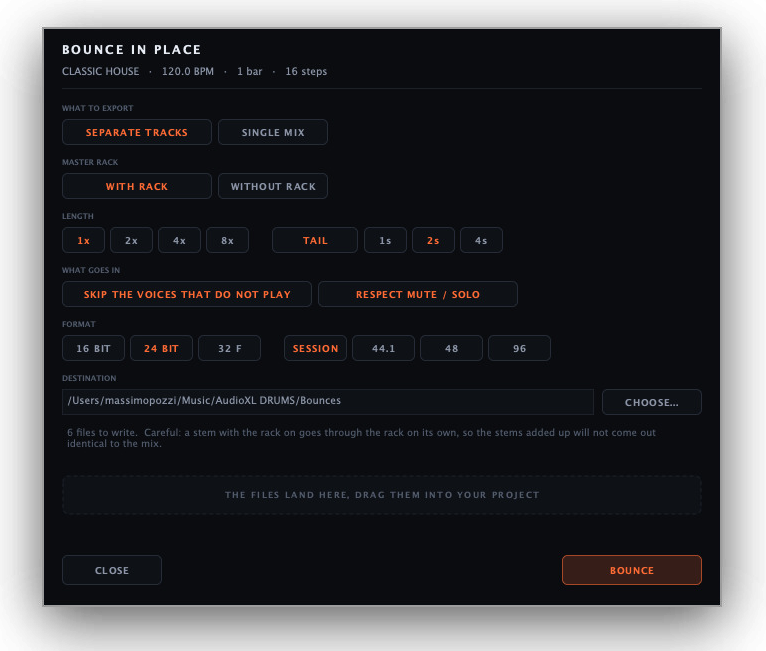
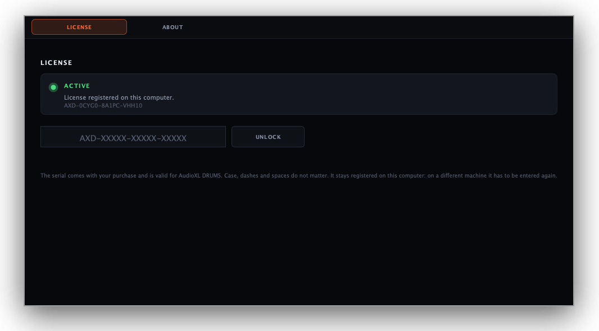

VST3 · AU · STANDALONE
DRUM MACHINE
SAMPLER
Synth
or
sample
A 16-step drum machine with eight synthesised voices, a sampler and an effects rack.
User manual
1.0.0VER
Voices
8

AudioXL · MilanoUser manual
A 16-step drum machine with eight synthesised voices, a sampler and an effects rack.

The figures are snapshots of the real window, retaken at every build: what you see here is what opens in your host. The enlarged controls are the Blender renders the plugin’s skin is built from.
Mix them freely: a sampled 909 kick with a synthesised 808 snare.
AudioXL DRUMS is a 16-step, eight-voice drum machine, available as VST3, Audio Unit and a standalone application. Each voice can be an analogue-style synthesis engine or a sample, and the two mix freely: a sampled 909 kick with a synthesised 808 snare is a perfectly normal combination.
Two separate packages, with different lives. The plugin is small and updated often; the library is heavy and rarely changes.
VST3, Audio Unit and the standalone application.
The 3469 samples. Installer.app lets you pick the drive, external included: the plugin finds the library on its own.
On first launch the plugin runs as a demo: it plays for ten minutes and then the output goes silent. The serial goes in PREFERENCES › LICENSE. See the last chapter.
Groove, kit and transport.
The step grid.
A row of tabs: VOICE for the selected voice, MASTER FX RACK for the effects, BROWSER to search across kits, samples and grooves.

A grid of 8 tracks by 16 steps. Every step has three states: rest, hit, accented hit. Click to write, drag to fill several steps in one gesture.

The closed hat chokes the open one, as on a real machine.
At the bottom of the window. The history covers everything: steps, knobs, kits, effect profiles, loaded samples, copied sequences.
Operations that move many things at once count as a single step: loading a groove changes pattern, kit and effect profile, and undoing it takes all three back in one go.
Dragging to write eight steps also costs one undo, not eight.
The eight tracks share the same nine controls, in the same places: your hand learns where DECAY is and finds it again on any instrument. Only the first four labels change, because they describe the engine.

Then, on every voice: DRIVE LEVEL PAN REVERB DELAY
The engines are real synthesis, not samples.
The two tabs SYNTH and SAMPLE choose where the voice’s sound comes from. In SAMPLE the first four knobs change job and the labels say so.
Switching to SYNTH, the sample stays in memory: only the mode changes, and one click brings it back. The waveform box says so, printing sample not active instead of letting you think the load failed.

Below there are LOAD for any file, X to remove the sample and HIT to audition the voice. An audio file can also be dragged straight onto the row in the grid.
The KIT menu shows, inside the same brand folder, the SYNTH kits (the synthesis engines, tuned preset by preset) and the SAMPLE kits (the samples of the real machine). They are two ways of having the same machine and both are visible, so you never have to guess which side the sound you want is on.
The number next to the sampled kits says how many of the eight voices that machine can cover.
A hundred and thirty-six patterns with a suggested tempo and swing, each paired with a kit and an effect profile, split into twenty-eight genre folders:
Grooves and kits are independent: you can put a house pattern on an SP-1200 or a boom bap on a 909. Grooves are also exposed as programs, so they show up in the DAW’s own preset menu.
The plugin ships with 3469 samples taken from 68 real machines, across fourteen brands:
The menu is organised in levels: brand › machine › instrument › sample
Samples are called TYPE NN (SNARE 03), and in full MACHINE TYPE NN (TR-808 SNARE 03) where the machine they come from isn’t otherwise visible.
The file name is never shown: in the packs it carries the signature of whoever bundled them, which tells you the seller and not the instrument. Nothing is renamed on disk: this is only the label.
For kick, snare, clap, tom and rim the first of the category will do. For hats and cymbals it won’t: in these packs the numbering is the degree of opening, not a ranking. The closed hat takes the shortest and the open hat the longest, which is after all the definition of the two sounds.
The plugin looks for it in this order:
That last entry is what makes the library work from an external drive without having to point at it by hand every time. If the drive isn’t there, the browser says so instead of pretending nothing happened.
To add machines of your own, create the folders following the Brand/Machine/sample.wav pattern and press RESCAN: they appear at once, with no need to restart the host.
The instrument is derived from the file name. 1850 samples out of 3469 land in one of the eight categories; the rest don’t disappear, they sit under MISC.
Sixteen machines have purely numeric names: for those there is only MISC, because guessing would be worse than letting the ear choose.
The BROWSER page puts synth kits, sampled machines, single samples and grooves into one list with one search box. With 77 kits, 68 machines, 3469 samples and 136 grooves, menus are for picking something you already know you want; this is where you go looking.

Each with its own bypass LED.
The green LED inside the MASTER FX RACK button switches the whole rack on and off; the rest of the button opens the page. The LED stays visible from the VOICE page too, so you can compare with and without the rack while working on sounds.
Transient, Machine, Drive, Filter and Comp are inserts: they work on the whole mix. Delay and Reverb are marked SEND because they are returns: they come back in after the master chain, so drive, filter and compressor don’t colour them again. The two sends are independent of each other: what you send to the delay never ends up in the reverb.
The REVERB, DELAY and DRIVE of a single voice do not go through the rack. The sends on the voice panel knobs have two engines of their own, always running: you hear them with the rack switched off. From the rack modules they only take the character — time, damping, size, pre-delay — not the switches.

The SYNC MASTER RACK button, at the bottom of the effects page next to MASTER PRESET, is the same switch that the other plugin calls SYNC DRUMS: turn it on from either side, it makes no difference, and the two windows stay in agreement.

Each on its own: this rack is all in here.
On, but there is nobody on the other side yet. You can switch it on before opening Master Rack: when it arrives, the link engages by itself.
Linked: from here on the one doing the colouring is Master Rack.
Open AudioXL DRUMS on its own and nothing changes: the button is off. The link is something you ask for. When it engages, the whole master rack goes over to Master Rack exactly as it stands — transient, machine, drive, filter, compressor, delay and reverb, values and menus included — and all seven go into bypass here. Over there you find the very same chain, and from that moment the knobs are its own.
What travels is the master rack, not the sends of a single voice. The REVERB and DELAY knobs on the voice panel have two engines of their own, one per track, and they stay here: a tail on the snare is not a tail on the mix. The DRIVE and CLICK of each voice don’t travel either: they are controls inside that track’s synthesis engine, not rack modules, and they stay per channel — the rack’s DRIVE and the voice’s DRIVE share a name but not a stage.
The stages Master Rack has on top — EQ, exciter, maximizer and clipper — are switched off when the link engages, otherwise what you would hear wouldn’t be the DRUMS chain but the DRUMS chain plus four stages left on by a preset chosen earlier. Not the limiter: that is protection, and pulling it out from under a master bus mid-take would be a poor way to be consistent.
Turn the sync off — from either side — and the switches go back as they were, with the values they had before handing the chain over. If Master Rack disappears without saying goodbye, the rack comes back on its own after a second and a half.
A padlock, next to Master Rack’s MASTER PRESET menu, decides whether that plugin follows every change made here (open, the factory setting) or whether the preset it has built stays protected (closed) — the chain is handed over all the same, only nothing arrives on the other side. Details in the Master Rack manual.
BOUNCE IN PLACE writes one file per sounding voice to disk, plus the mix. You choose:

The eight voices can send their notes to another machine: you choose the channel, and the accent travels as velocity. Every note that goes on is turned off again.

Without a serial, AudioXL DRUMS runs as a demo: it plays for ten minutes and then the output goes silent. What is counted is minutes of actual work, not the clock. Everything else keeps running — the sequencer advances, parameters respond, the pattern saves.
To unlock: PREFERENCES › LICENSE, the first tab. Paste the serial you received with your purchase and press UNLOCK. The limits disappear immediately, with nothing to reopen and nothing lost of what you were doing.

Type it without worrying about case, dashes or spaces. The letters that get confused when reading off a sheet — an o for a zero, an l for a one — are accepted all the same.
The serial is registered on this computer: on another machine it has to be entered again. An AudioXL DRUMS serial will not open AudioXL Master Rack: they are two products with two different keys.
Eight voices. Sixteen steps. Synth or sample, on every track.